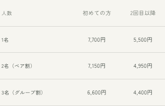
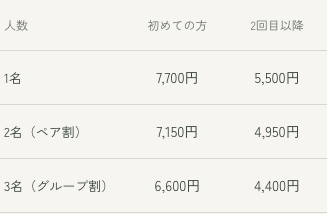
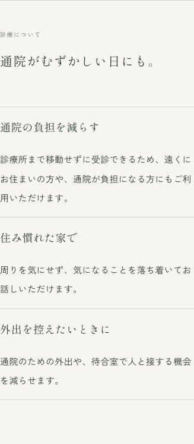
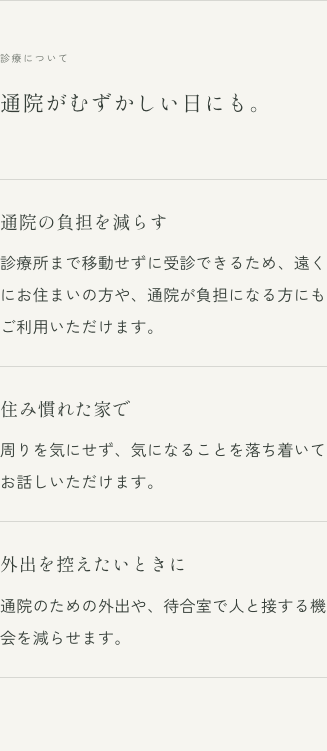
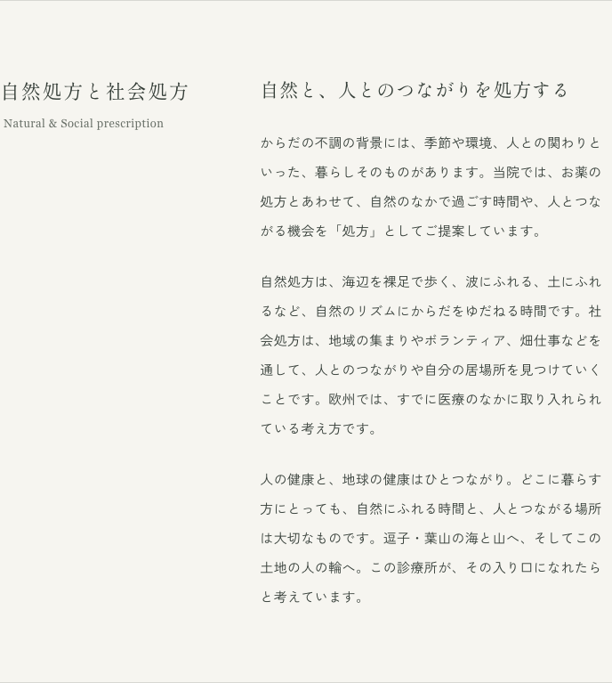
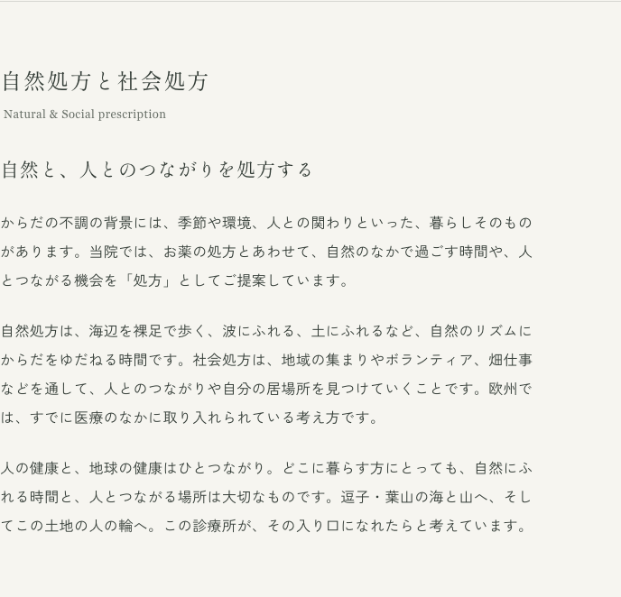

D01 料金表
375px幅。左が現状、右が金額14px・項目13pxの案。
現状

修正案・未反映

2026年10月12日 · 最初の比較案と検討履歴
MAP.md全体、前回の比較案の引き継ぎ、公開サイトの正式10ページと旧preview、共通メニュー・フッター・検索／共有文を確認しました。OCEANの関連する理念の記録と、過去チャットの本人の言葉も照合しました。
いまのサイトには、本人撮影の風景、紙色、明朝体、縦書き、細い罫線というよい土台があります。私の推奨は、ここを生かしながら「読める大きさ」「同じ話が近くにある配置」「言い過ぎない具体的な日本語」を整えることです。
以下は最初に提示した提案の記録です。「先に直す候補」は読みやすさ・案内の明確さ、「比較して選ぶ／好みで選ぶ」は美意識や声の選択、「確認事項」は事実を確かめてから決める項目です。全55項目を一括で変える提案ではありません。
サイトの文章・表示設定・写真は変更していません。前後の画像は、比較用のブラウザーだけに仮の表示設定を当てて撮影しました。
表示だけの仮案です。文章、料金、申し込み先は同じです。
375px幅。左が現状、右が金額14px・項目13pxの案。


375px幅。左が現状、右が見出し直下8px・本文16pxの案。文章は同じ。


768px幅。左が現状の2列、右が1列・本文最大600pxの案。文章は同じ。


16項目 · 未選択は現状を維持
D01 · 先に直す候補
参加費・キャンセル規定の表は11px、最初の列は10px。375px幅でサーフセラピーの金額は11px。
金額14px、項目13px、列見出し12〜13px。項目名は必要に応じて2行、金額は1行。診療時間の曜日表は別の設定にする。
お金や参加条件は読み落としなく伝える。控えめな罫線と余白を残したまま、文字を大きくできる。3列のサーフセラピー表で比較済み。裸足ハイク表やキャンセル表は採用後に個別確認する。
D02 · 先に直す候補
スマホでは、オンライン診療の小見出しと説明の間に22pxの余白。PCでは案内リスト6px、手順4px。
小見出しと説明の間は8〜12px。項目同士の余白は24〜32pxを保つ。
同じ話の見出しと本文を近づけ、別の話との間を広くする「近接」の原則。余白の量を減らすより、意味を分ける。比較画像では本文16px案も併用。
D03 · 比較して選ぶ
768px幅でも左見出し・右本文の2列。本文欄は約396px、見出し欄は約247px。
701〜899px程度は1列にして、本文は最大600px程度。900〜1023pxは見出しと本文の幅を見て2列にする案と比較する。
タブレットでは、本文のために使える幅に対して左欄が大きい。1列案は内容を追いやすい。境目の900pxは仮の目安で、固定のデザイン法則ではない。768pxの比較のみ作成済み。
D04 · 比較して選ぶ
本文は375px幅で15px、320px幅で14px。行高はそれぞれ32.25px・30.1px。PCは16px・32.8px。
スマホ本文16px、行高31〜33pxを出発点に比較。PC通常本文16px・冒頭の明朝17pxは現行を維持。通常本文17px案は必要なページだけ比較する。
小さな端末ほど文字が小さくなる現在の設定を見直す。文字を大きくすると縦に長くなるため、同時に段落を短くし、行間を過剰に広げない。16pxはこのサイトへの提案値。
D05 · 先に直す候補
スマホの詳細欄は13px、左の項目名は11px。住所や開催日、電話番号も小さめ。
重要な値は14〜15px、項目名は12〜13px。長い「お問い合わせ」は1列表示も比較。
本文より、受診や参加に必要な情報のほうが小さく見える。情報の重要度と文字の大きさを合わせる。
D06 · 先に直す候補
スマホの表紙下「完全予約制」10px、電話受付などの補足12px、フッターの公式LINE10px。
完全予約制・電話受付・住所連絡の説明は12〜14px。写真の注記や英字の屋号は控えめな現状を基準にする。
全ての小文字を同じ大きさにするより、読み取る必要がある情報を優先する。写真上の文字は画像の明暗も個別に見る。
D07 · 先に直す候補
320pxのお知らせはページ見出し22px、記事見出し23pxで大小が逆転。イベント内の節見出しは18px。
お知らせの記事見出しだけ20〜21px案にする。通常のページ見出し・節見出しはまず現行を維持。本文を16pxへ拡大する案を選んだ場合は、関連する見出しも実画面で再比較する。
お知らせの記事用のスマホ調整が当たっていない取り残し。通常ページの小さめの見出しは本人が選んだため、一緒に大きくしない。トップの縦書き屋号や詩は別枠。
D08 · 比較して選ぶ
PCの通常本文は最大約605px（約36字）。お知らせ本文は720pxまで広がり、裸足ハイクの説明も別の幅になる。
読む文章の幅は約580〜640pxを基準にする。料金表・写真・一覧の幅は用途に合わせて保つ。
同じ文字でも、行の長さが変わると読むテンポが変わる。現在採用済みのPC16px・約36字を出発点にそろえる。
D09 · 比較して選ぶ
トップの本文にはPCだけの固定改行と、意味ごとの折り返し指定が多い。
詩や短い見出しは意図した改行を残す。説明の段落は基本的に画面幅で折り返し、どうしても必要な箇所だけ固定する。
文章を直したときにも一行だけ短く残らないようにする。意味のまとまりを守る設定は既にあるので、全面的に外す必要はない。
D10 · 基本は維持・必要箇所のみ比較
PCのトップ見出し3つ、身土不二、裸足ハイクの詩・結びは縦書き。本文・実用情報は横書き。スマホの身土不二は縦の題と横の本文。
縦書きは短い見出しや詩に絞る現行を維持。縦の見出しの頭と横の本文の最初の行をそろえ、余白を一定にする。スマホの身土不二は現行と、横本文を左揃えにする案を比較。
混在そのものは問題ではない。方向が変わる所に適切な余白を置き、どこから読むかを明確にする。右揃え・縦書きは直近の本人選択なので再選択は任意。
D11 · 好みで選ぶ
トップの詩はPC24px・字間0.32文字分、スマホ19px・0.24文字分。PCの縦見出しは30px・字間0.28文字分。
現行を基準に、縦見出しの字間0.18〜0.24文字分の案を比較。詩の2列・2列目を下げる配置は維持する。
字間を広げすぎると、一つの言葉を一字ずつ追う感じになる。侘び寂びの余韻は、字間だけでなく周囲の空間でも作れる。規則違反という指摘ではない。
D12 · 比較して選ぶ
PCの節は上下各112px、スマホは各48px。トップの詩、導入、写真、全ページ共通の夕景にも大きな間がある。
PCの節は現行を基準に96〜112px、スマホは48〜64px。詩や景色の余白は残し、短い実用案内は詰める案を比べる。
余白を全て同じにするより、読む・眺める・申し込む場面の違いを伝える。特に短い一覧とお知らせでは、夕景が本文より大きく感じられるため好みで比較する。
D13 · 好みで選ぶ
屋号は約0.35秒後から4.2秒で表示。メニューや下部案内は4.9秒後から表示される。動きを減らす設定とキーボード操作時の配慮はある。
屋号のゆっくりした表示は維持し、メニューや予約案内だけ最初から見せる案と現行を比較。
初めて来た人が予約を探す場面では待ち時間になる。一方、現在の速度は本人の選択。動作不良として扱わず、風景への没入と用件の見つけやすさを比較する。
D14 · 基本は維持
見出し・詩は明朝、通常本文はゴシック。PCの冒頭説明は明朝17px、英語はGeorgia。表紙の屋号は端末の明朝が優先される。
この使い分けを維持。PCの長い説明はゴシック、短い理念は明朝。表紙の屋号のみMacとスマホ実機で見比べ、差が気になる場合に書体統一案を出す。
和の雰囲気を出すために全て明朝にすると、料金や連絡先が読みにくくなり得る。英語や屋号は装飾の役割があるので、本文の物差しへ無理にそろえない。
D15 · 基本は維持
紙色#f6f5f0、本文#343d37、補足#697068、松葉色の印、本人撮影の朝夕の風景と室内。
基本の色・写真・細い罫線を維持。新しい和柄や筆文字を足さず、文章の密度と余白を整える。小文字と写真上の白文字のみ読みやすさを再確認。
固定の紙色に対する本文と補足の明暗差は良好。全てを薄くすることが侘び寂びではない。現在の実写に土地と時間の変化が既にある。
D16 · 先に直す候補
オンライン診療の質問回答はスマホ13px・PC14px。トップの行き先リンクはスマホでも20px固定。
回答はスマホ15px・PC16px。トップの行き先は18〜19px案を比較し、押せる範囲の上下余白は維持する。
質問の答えは受診に必要な本文なので、小さくしすぎない。見出し・行き先・補足の大小は役割に合わせる。
31項目 · 未選択は現状を維持
W01 · 好みで選ぶ・直近採用済み
日々のなかに、
からだがある。
推奨案：からだを診る。
暮らしに目を向ける。
余韻を多く残す案：からだと、
日々の暮らしを。
現行は詩的だが、診療の姿勢が少し遠回り。診察と生活をつないで診ることを一段具体的にできる。縦2列の長さも見て選ぶ。現行維持も十分にあり。
W02 · 軽い修正候補
よく眠れているか。食事をおいしく食べられているか。
よく眠れているか。
おいしく食べられているか。
「食事を」「食べる」の重なりを除く。暮らしの具体的な問いと、短い行の語感は残せる。
W03 · 好みで選ぶ・直近採用済み
からだの不調も、暮らしのなかの小さな迷いも、どうぞ急がずにお話しください。
からだの不調も、日々の暮らしで気になっていることも。どうぞ急がずにお話しください。
「迷い」は人生全般の相談まで含むようにも読める。診察で伺う暮らしの話へ近づけ、柔らかさは保つ。
W04 · 好みで選ぶ・直近採用済み
靴を脱いで砂の上に立つと、ふだん忘れている足の裏の感覚がよみがえります。
靴を脱いで、砂の上に立つ。
足の裏に、砂のやわらかさが伝わります。
読者が何を忘れているかを決めず、実際に感じるものを描く。体験の押しつけを弱める小さな編集。
W05 · 比較して選ぶ・見出しは維持
救急医療の経験 → 漢方を学んだ経緯 → 逗子の景色と「港」の願い。
推奨案：逗子の景色と「港」の願い → 救急医療の経験 → 漢方を学んだ経緯。
別案：土地の段落をこの節に残し、医療の経緯2段落を医師紹介へ移す。
本人が選んだ見出しへ最初の段落からつながる。移動の少ない推奨案から比較できる。文章そのものを全て新しくする必要はない。
W06 · 好みで選ぶ・直近採用済み
検査の数値だけでなく、体質や暮らしぶり、心の状態までを見渡し、季節や環境とともに移り変わるからだの声に耳を傾ける。いまの診療で、何より大切にしていることです。
検査の結果に加えて、体質や日々の暮らし、心の状態も伺います。季節や環境によって変わる不調を、丁寧に診ていきたいと考えています。
「見渡す」「からだの声」「何より大切」が重なる箇所。具体的に何を聞き、どう診るかへ近づける。トップの詩には「からだの声」を残す。
W07 · 好みで選ぶ・今日採用済み
自然と、人とのつながりを処方する
海や山へ、人の輪へ。
節タイトルの「処方」をもう一度説明する代わりに、向かう場所を描く。医師が自然との触れ合いを処方する本人の意図は本文に残す。現行の力強さを好むなら維持。
W08 · 比較して選ぶ・今日採用済み
一つの長い段落の中で、自然処方、社会処方、欧州の医療の説明が続く。自然処方は「自然のリズムにからだをゆだねる時間」と説明。
自然処方は、海辺を裸足で歩く、波にふれる、土にふれること。自然を感じながら、からだを動かす時間をご提案します。
社会処方は、地域の集まりやボランティア、畑仕事などを通して、人とのつながりや居場所を見つけていく考え方です。
静かに身をゆだねる面に加え、歩く・動く・人と関わる面を伝える。自然処方と社会処方を2段落に分ける案。欧州の一文はW09と一緒に選ぶ。
W09 · 事実と意図を確認して選ぶ
欧州では、すでに医療のなかに取り入れられている考え方です。
欧州表記を残す案：欧州では、人を地域の活動やつながりへ結ぶ「社会処方」を、医療に取り入れる動きが広がっています。
短くする案：この一文を省き、当院が大切にしていることへつなぐ。
現行では自然処方・社会処方の両方、欧州全域を指すようにも読める。NHS一次資料で英国の取り組みは確認できる。欧州表記は今日の本人指定なので、地理を無断で英国へ戻さない。欧州全体の動きを書く案は地域別根拠の追加確認後に採用する。
W10 · 構成を比較して選ぶ
人の健康と、地球の健康はひとつながり。
（自然処方と社会処方の本文に含まれる）
推奨案：この一文を残し、同じ節の中で「人と自然、ともに健やかに。」という短い小見出しで整理する。
独立した節を作る場合の導入案：人の暮らしは、海や山、土や水の営みとつながっています。人の健康と、自然の健やかさをともに考えることを、診療とフィールドワークの土台にしています。
OCEANの記録では診療と活動は一つのライフワーク。新しい資格や効能の説明として足すより、同じ願いから生まれた活動と伝える。独立した節の追加はまだ未決。
W11 · 実施状況の確認後に採用
診療とは別に、ヨガと瞑想の指導やワークショップも行っています。
リンク先はフィールドワーク2件の一覧で、ヨガの開催案内はない。
定期・個別に実施している場合：診療とは別に、ヨガと瞑想の指導も行っています。開催予定やご相談は、公式LINEへお問い合わせください。
企画中の場合：ヨガと瞑想のワークショップは、開催が決まり次第ご案内します。
すでに行っていることと、これから始めることを読み分けられるようにする。新しい開催実績をAIが作らない。導線の変更は実際の受付方法を確認してから。
W12 · 先に直す候補
保険診療と自費診療（自由診療）を組み合わせながら、症状や体質、日々の暮らしに合わせた診療をご提案します。
症状や体質、日々の暮らしを伺いながら、診療をご提案します。診療内容により、保険診療または自由診療（自費診療）となります。
「組み合わせながら」は費用の区分を読み取りにくい。診療の姿勢と費用区分を別の文にする。保険／自由診療の運用自体は変更しない。
W13 · 確認してから比較
総合内科・救急対応
見出し案：総合内科・けがの初期対応
別案：現行見出しを保ち、予約・受入可能な範囲を本文に明記する。
突然行けば救急外来として受け入れると読まれる可能性がある。救急科専門医としての経験と現在の診療所の受付体制を分けて伝える。対応範囲の新しい条件は、本人確認なしに足さない。
W14 · 軽い修正候補
こうしたお悩みを伺い、漢方の視点から体質やからだの状態を見つめます。
こうしたお悩みを伺い、漢方の視点から体質やからだの状態を診ていきます。
「見つめる」より、医師が診察することが明確になる。本人が指定した「脈と舌と腹部を診察し」はそのまま残す。
W15 · 好みで選ぶ・直近採用済み
食事や睡眠を振り返り、瞑想やヨガなど、ご自宅でも続けられる方法をご案内します。ご自身にも環境にもやさしい暮らし方を、ご自分のペースで探していきましょう。
食事や睡眠のことを伺い、瞑想やヨガなど、日々の暮らしで取り入れられる方法をご案内します。無理なく続けられる養生を、ご自身のペースで考えていきます。
「環境にもやさしい」が何を指すかは現在の本文では分かりにくい。環境への姿勢は理念の節で具体化し、診療案内は実際に相談する内容を中心にする。
W16 · 先に直す候補
オンライン診療は現在、システム構築中です。準備が整い次第、開始時期やご利用方法をご案内します。
オンライン診療は、現在準備中です。開始時期やご利用方法は、準備が整い次第ご案内します。
作っている仕組みの説明より、読者が知りたい受付状況を先に伝える。現在の準備中の状態は維持。
W17 · 好みで選ぶ
通院がむずかしい日にも。
ご予約から、お薬まで。
受診の前に、ご確認ください。
オンライン診療について
ご利用の流れ（予定）
よくあるご質問
ページ冒頭の「いつもの場所で、診療の時間を。」に余韻を残し、下の案内を探しやすくする案。すべての見出しを詩的にする必要はない。
W18 · 事実確認後に採用
通常の診察料に加え、システム利用料（事務手数料）が必要となります。詳細は予約時にご確認ください。
専用アプリのインストールをお願いする場合がございます。
費用が未確定の場合：費用やお支払い方法の詳細は、受付開始前にご案内します。
アプリが未確定の場合：必要なアプリなどは、受付開始前にご案内します。
準備中のページで、決定済みの条件と未決の条件が混ざっている。実際に決まっている料金や決済方法を消すのではなく、決定状態を確認してそろえる。
W19 · 好みで選ぶ
自律神経、自己治癒力、フィトンチッド（樹木が放つ香りの成分）についてお話しします。
漢方の視点から、季節とからだの関わりや、森の香りについてお話しします。
専門的な名詞が続く所を、初めて読む人にも届く説明へ。講話の内容がこの案と合う場合にのみ採用し、伝えたい専門語があるなら現行を残す。効果が約束されていると断定する指摘ではない。
W20 · 本人指定の文・確認して比較
救急科専門医が主催しています。怪我や急病にも迅速に対応しますので、安心してご参加ください。
救急科専門医がご案内し、参加される方の体調に配慮しながら進めます。体調や歩くことに不安がある方は、事前にご相談ください。
安心という結論を読者へ求めるより、何をするかを説明する比較案。医師が毎回案内すること、対応できる範囲を確認して採用する。既存の「靴はいつでも履ける」「ゆっくりな方へペースを合わせる」は良い具体文なので残す。
W21 · 事実確認後に比較
幼児からご年配の方まで、のんびり歩ける約3kmの道のりです。体力に自信のない方も歓迎します。
道のりは約3kmです。お子さま連れの方や、体力に不安のある方も、事前にご相談ください。無理のないペースでご案内します。
誰でも同じように歩ける印象を弱める。対象年齢や山道の条件は本人の方針を確認してから決める。歓迎する姿勢は維持する。
W22 · 軽い修正候補
ご不明な点や気になることがございましたら、廣瀬診療所の公式LINEよりお気軽にお問い合わせください。個別にご案内いたします。
ご不明な点や気になることは、公式LINEでお問い合わせください。個別にご案内します。
本文の「です・ます」と比べ、ここだけ「ございます・いたします」が重なる。丁寧さを保ち、短くする。「お気軽に」は全て削らず、必要な所だけ残す。
W23 · 先に直す候補
診療のご予約、サーフセラピーのお申し込み、フィールドワークについてのご質問は、廣瀬診療所の公式LINEで承っています。
診療のご予約とサーフセラピーのお申し込み、ご質問は、公式LINEで承っています。裸足ハイクは、案内ページの申込フォームからお申し込みください。
裸足ハイクはGoogleフォーム、サーフセラピーはLINEという現在の違いを読み取りやすくする。申し込み先は変更せず、案内ページへ進めるリンクを添える。
W24 · 本人の選択が必要
about：Natural & Social prescription
events：Field work / Nature Prescription
現在のカテゴリー名に合わせる案：Nature & Social Prescription
一覧の表記案：Fieldwork / Nature Prescription
活動の考え方を表す別案：Nature & Social Prescribing
Natureを使うと、本人の意図である「自然との触れ合い」の名にそろいやすい。Naturalを直ちに誤訳と断定しない。Prescription／Prescribingは名称としての好みと使い所で選ぶ。本人が選んだGrounding、Yoga & Meditation、Sense of wonderは維持。
W25 · 軽い修正候補
からだ／身体、はじめて／初めて、自由診療（自費診療）／自費診療（自由診療）、ご自身／ご自分、患者さん／患者さまが混在。
本文は「からだ」「初めて」「自由診療（自費診療）」「ご自身」を基準にする。本文は「患者さん」、法的な規程は「身体」「患者さま」など文脈に合わせる。案内の主体は「当院」、最初の紹介や固有名は「廣瀬診療所」。
機械的な全置換ではなく、詩・診療説明・実用情報・規程ごとの役割でそろえる。本人指定の「はじめての方も、お子さま連れの方も歓迎します。」はそのまま保持。「西洋医学と東洋医学」「代表／医師」「瞑想」も保持する。
W26 · 先に直す候補
タイトル：廣瀬診療所 | 西洋医学×東洋医学 逗子の自然と調和する診療所
説明：神奈川県逗子市にある廣瀬診療所。救急科専門医と漢方専門医の視点から、未病を防ぎ、自然と調和するライフスタイルを提案します。
タイトル案：廣瀬診療所｜逗子・桜山の完全予約制診療所
説明案：逗子・桜山の高台にある廣瀬診療所。西洋医学と東洋医学の両方から、症状や体質、日々の暮らしを診ていきます。診療案内と、裸足ハイク・サーフセラピーをご紹介します。
本文を直しても、検索やLINE共有の短文に以前のAI文が残っている。「未病を防ぐ」は意味が曖昧なので、行っている診療と活動を説明する。
W27 · 軽い修正候補
波と触れあいながら心と身体をゆるめる時間を、初めての方も少人数で体験できます。
水の感触、寄せては返す波。自分のペースで、海と過ごす時間です。初めての方も少人数でご参加いただけます。
本文の具体的な描写に合わせ、共有文だけ大きな気分の変化を語らないようにする。90分・資格・参加費案内は維持。
W28 · 事実確認後に採用
共有画像の説明は「逗子の海岸から望む富士山と江ノ島の夕景」。表紙の注記は「診療所からの眺め」。
撮影場所が診療所からの眺めであることを確認し、「診療所から望む、夕暮れの富士山と江ノ島」にそろえる。
画面の注記と、画像を読み上げる説明が一致していない。共有用hero.jpgも同じ原画のため、実際の撮影場所を確定して統一する。
W29 · 軽い修正候補
※ 土曜午後は予約診療（自費診療のみ）となります。
※ 土曜午後は自由診療（自費診療）のみです。
全日が完全予約制なので、土曜だけ予約制と読める言い回しを除く。曜日・時間・診療区分は変えず、本文と読み上げの文もそろえる。
W30 · 軽い修正候補
静寂のワーク
咄嗟のときに
足を拭く用に一枚あると便利です。
クールダウンをして、体験をふりかえります。
ビデオ通話にて医師が診察を行います。
耳を澄ます時間
とっさのときに
足を拭くために、一枚あると便利です。
からだを休めながら、体験をふりかえります。
ビデオ通話で診察します。
内容や持参物の任意性を変えず、具体的な動作が想像できる日本語にする。クールダウンの運動を実際に行う場合はその動作を説明する。詩的な本文と実用案内で同じ語調を保つ。
W31 · 好みで選ぶ
フィールドワーク一覧は見出しと2つのリンクのみ。参加対象には「プラネタリーヘルスや、統合医療に関心のある方」と専門語が続く。
一覧の導入案：海や山で過ごす時間を、暮らしのなかへ。医師がご案内する自然処方のプログラムです。
参加対象の案：人の健やかさと、自然の営みのつながりに関心のある方。
初めて見る人へ、言葉の意味を短く渡す。現在の静かな一覧を好むなら導入なしを維持。「医師がご案内する」は各活動で実際に案内する体制を確認して採用する。専門家も招きたい意図や、本人の活動名は残せるようにする。
8項目 · 未選択は現状を維持
F01 · 情報を確認
記事は2026年3月5日。MAPでは開院年の確認が宿題。過去の本人チャットにも2026年3月開業とある。
2026年3月5日でよいかを本人の記録で確定し、記事・経歴・今後のお知らせをそろえる。
資料の一致はあるが、日誌上の宿題をAI判断だけで完了にしない。
F02 · 情報を確認
aboutはヨガの指導を実施中と説明。社会処方のネットワークはOCEANの記録では構想中。
いま案内できる活動と、これからつなげたい活動を確認して文章を分ける。未確定の独立ページや、準備中だけの空の項目は自動で作らない。
本人のライフワークの方向と、現在提供できるものは別々に正確に伝える。
F03 · 情報を確認
準備中。初診利用は予定、費用・決済・アプリは具体的な記述あり。
開始日、受付条件、追加費用、決済方法、必要アプリの決定状態を確認。薬の受け取りは本人指定の「保険は薬局へデータ／自由診療はご自宅へ直接」を維持。
不明な条件を新しく確定しない。開始済みと読める文章のみ整理する。
F04 · 情報を確認
3日前まで無料／2日前〜前日50％／当日の無断キャンセル100％。当日に連絡した場合は明記なし。
当日連絡ありの条件を確認して、表に1行足す案。開始時刻、税込金額、雨天振替の条件は勝手に変更しない。
参加者が判断に迷う実際の空白。AIが料金を補ってはいけない。
F05 · 情報を確認
現在は開院の記事1件のみ。過去の架空の記事は既に削除済み。
開催が確定した活動や、実際の診療所だよりを本人の情報から追加する。文体案：「秋冬の裸足ハイクをご案内します」など用件が分かるタイトル。
新しい架空の研修・実績・日程を作らない。現在の1件だけの状態を、昔の「4月の3件」と混同しない。
F06 · 運用の確認後に再編集
ご本人の同意なく提供しない原則の例外に「他の医療機関との連携など、適切な診療の継続のために必要な場合」とある。窓口は「ご予約時にご案内する連絡先」。
同意の扱いと実際の連携方法を確認して書き分ける。窓口は予約前にも分かる公開中の電話やLINE案内へつなぐ案を比較する。
必要ならいつでも同意なしに共有できる、と広く読める。医療分野では掲示による黙示の同意等の扱いもあるため、単なる誤りや違法と断定せず、実際の運用を確認する。規程を雰囲気だけで書き換えない。
F07 · 扱いを選ぶ
/preview は今も200で閲覧でき、robotsの検索除外指定はない。現行と違う文章「根をたがやす」「薬に頼りきらず」「あなたの『めぐり』」等が残る。/design/wordmark は本番404で検索除外済み。
旧previewは、本番で見せないようにして記録として保存する案を推奨。残す場合は検索除外と「旧デザインの比較用」の明記。まず扱いを選び、削除や公開設定変更は次の作業で行う。
現在のホームページの理念と別の文章が一般公開されたままだと、全体の統一が届かない。検索に実際に登録されているかまでは未確認。
F08 · 情報を確認
開催場所は「検討しています」。申し込みを受ける文、夏季の服装、天候中止の振替はあるが、支払い・参加者のキャンセル条件は掲載されていない。
現在の個別開催の受付状況、季節、場所、冬の服装、支払い方法、参加者都合のキャンセル、振替できない場合の扱いを確認。決定済みの内容だけ短く掲載する。
まだ企画中なのか、個別に相談して参加できるのかを明快にする。AI側で冬季開催や新しい返金条件を決めない。
候補番号で「D01は修正案、D03は現状、W05は段落の移動だけ」のように選べます。未選択は現行を維持します。
内部の根拠：MAP.md、前回の比較案の引き継ぎ、現行ソース、OCEANの関連する理念の記録、過去チャット「自然処方の英訳比較」「原稿批評と改善案」「見出しを雰囲気よく整える」。本人の発言とAIのまとめを区別。患者の診察・カルテ・Plaud原録音は読んでいません。
近接・整列・反復・強弱を編集に用いています。16pxや余白64pxなどはこのサイトへの比較案であり、唯一の正解や規格の強制値ではありません。